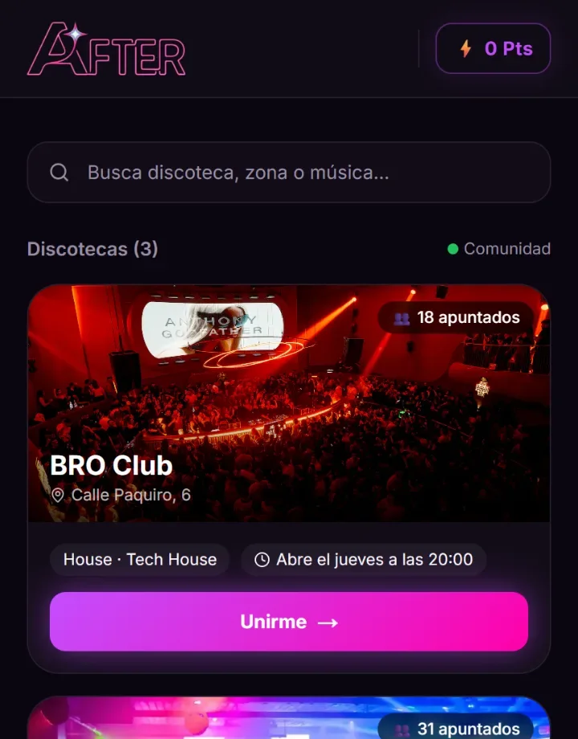

EXP. 001
After
Una app para saber quién sale esta noche en Málaga. De cero a 327 personas en lista de espera, sin presupuesto de publicidad.
El problema era social, no técnico: nadie sabe dónde va esta noche la gente de su edad. After lo resuelve con una lista viva de discotecas por zona y música, un contador de apuntados en tiempo real, chats y retos para romper el hielo, y puntos que premian aparecer.
- Producto: descubrimiento por zona y género musical, «unirme» en un toque, contador de apuntados en vivo, chats y perfil.
- Salida al mercado: lista de espera propia construida con contacto directo, uno a uno, en la escena local antes de abrir.
- Mi rol: lo construimos Gabriel y yo dentro de VIBA — producto, desarrollo, lanzamiento, alianzas con locales y operación comercial.

327lista de espera
1 OCTlanzamiento 2026
3discotecas activas
1:1captación manual
Next.jsReactVercelTiempo real